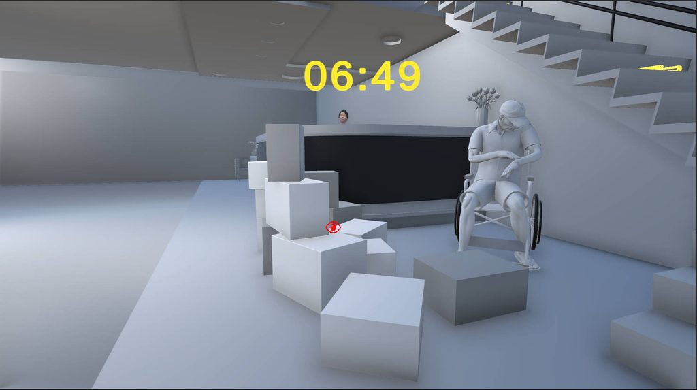
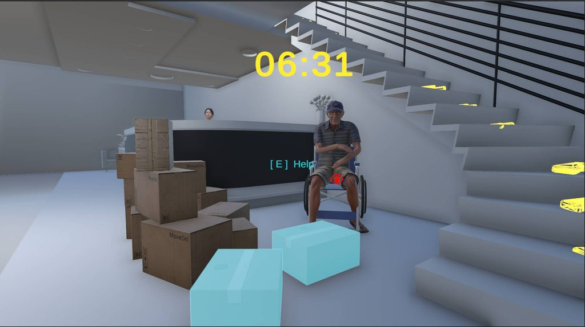
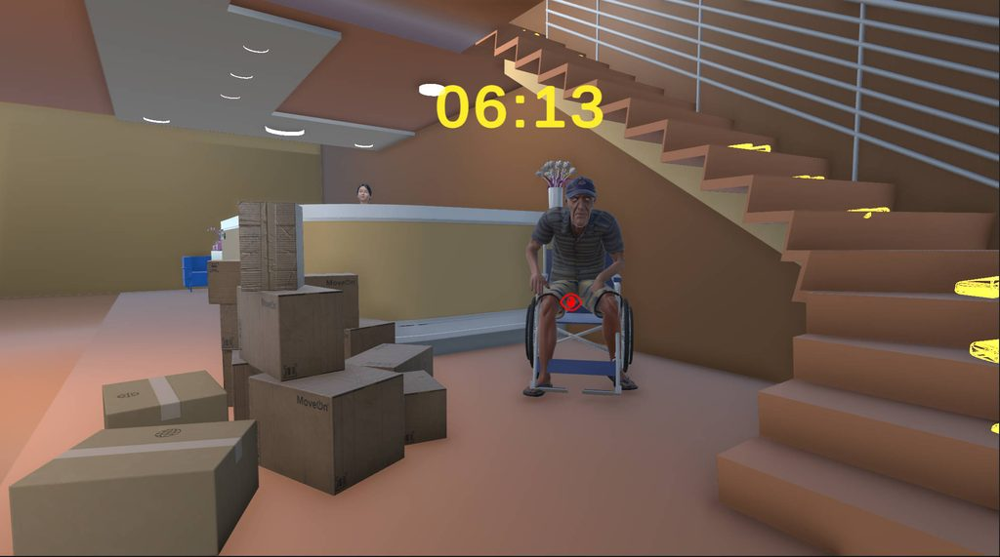
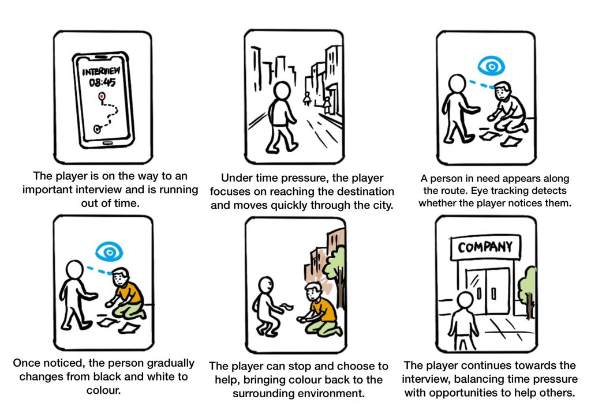

Beat the Clock.
An interactive project exploring visual tunnelling under time pressure and the relationship between visual attention and prosocial behaviour.



Artist Statement about the Creative Design Project
“Beat the Clock” is an interactive project based on virtual reality and eye-tracking technology, using prosocial behavior as a research context to focus on a key prerequisite for helping behavior—Noticing the Event. Under time pressure, people may become overly focused on their immediate goals, leading to visual tunneling, which narrows attentional scope and causes them to overlook events occurring around them. This project aims to explore how interaction design can help users recognize and overcome visual tunneling under time constraints, and further investigate the relationship between such attentional shifts and prosocial behavior.
In the experience, players must reach an important interview within a limited timeframe, encountering along the way multiple situations where they might need to offer assistance. The environment initially appears in black, white, and gray, with eye-tracking technology monitoring the player’s gaze in real time. When a player fixates on a character in need of help, that character gradually regains its original color, transforming the player’s attention into visible visual feedback. If the player then chooses to help and completes the interaction, the surrounding environment also begins to regain color, and the character provides some form of benefit to the player. Through this “gaze–color feedback–help–environmental change–social feedback” loop, previously imperceptible attentional shifts become tangible, encouraging players to actively observe beyond their immediate goals.
The main contribution of this project lies in exploring an intervention method against visual tunneling through interaction design. Eye-tracking and color changes serve as a real-time feedback mechanism, enabling players to recognize when they have noticed events they might otherwise have missed. It further investigates whether such feedback influences subsequent attention and helps behaviors. Thus, the project offers a VR research platform for examining the interplay among time pressure, visual tunneling, and prosocial behavior, providing design insights for future studies on how immersive interactions can help users become aware of and overcome attention limitations.
Storyboard

Context, Research Question and Research/Practice Gap
Research Background
In modern society, the pace of life continues to accelerate. In his review of Rosa’s Social Acceleration: A New Theory of Modernity, Ritzer (2017) argues that modern society can be understood through three dimensions: technological acceleration, the acceleration of social change, and the acceleration of the pace of life. Among these, the acceleration of the pace of life means that individuals constantly try to complete more activities within a limited amount of time, making time scarcity and time pressure increasingly common experiences in modern life. In this social context, people may focus more of their attention on the tasks they need to complete, thereby paying less attention to their surroundings and the needs of others.
Prosocial behavior is crucial to maintaining social cooperation and public well-being. However, in real-life situations, people often fail to promptly recognize others’ requests for help, or even when they notice such signals, may not take timely action due to factors such as the diffusion of responsibility. In 1964, the murder of Kitty Genovese drew widespread public and academic attention to helping behavior (Darley and Latané, 1968). According to media reports at the time, during the violent attack on Genovese, which lasted for several tens of minutes, several nearby residents reportedly heard or witnessed parts of the incident but failed to provide timely help. The case was widely regarded as an important turning point in the study of prosocial behavior, leading to extensive discussion in social psychology about why bystanders failed to intervene. It also encouraged researchers to systematically investigate the factors that influence helping behavior and contributed to decades of research on prosocial behavior.
Prosocial Behaviour and Bystander Intervention Model
Prosocial behavior is the label for a broad category of actions that are “defined by society as generally beneficial to other people and to the ongoing political system.” It includes helping, altruism, and cooperation. Among these, helping behavior specifically refers to actions that provide some form of benefit to others or improve their well-being. Social psychology has proposed several theoretical frameworks to explain prosocial behavior. Social Exchange Theory views help as a rational consideration of costs and potential rewards; Social Norms Theory emphasizes the influence of norms of reciprocity and social responsibility on individual behavior; while Evolutionary Psychology explains the evolutionary advantages of cooperation through Kin Selection and Reciprocal Altruism (Dovidio et al., 2006). Therefore, prosocial behavior is influenced by a combination of factors, including individual motivations, social norms, and specific situations.
To explain how helping behavior occurs in specific situations, Latané and Darley (1970) proposed the classic Bystander Intervention Model. The model suggests that helping behavior is the result of a series of sequential decisions. An individual must go through five stages in order: Notice the Event, Interpret the Event as Requiring Help, Assume Personal Responsibility, Choose a Way to Help, and Implement the Decision. If the process is interrupted at any of these stages, helping behavior may not occur.
Dovidio et al. (2006) further summarized that different stages of the helping decision-making process are influenced by different situational factors. In the first stage, the salience of the event and stimulus overload determine whether an individual first notices the request for help. The second and third stages are more likely to be influenced by the ambiguity of information and the number of bystanders, which may lead to Pluralistic Ignorance and Diffusion of Responsibility. The fourth and fifth stages are more strongly influenced by the individual’s knowledge and skills related to helping. This model suggests that failing to help does not necessarily mean that an individual lacks empathy or prosocial motivation. The helping process may already have been interrupted at an earlier cognitive stage. For example, an individual may simply fail to notice the event or may not recognize it as a situation that requires help.
Taken together, this theoretical framework suggests that noticing the event is the starting point of the entire helping process. Only when information about a request for help first enters an individual’s range of attention can the subsequent processes of interpreting the situation, assuming responsibility, choosing a way to help, and carrying out the helping action take place.
Time Pressure and Visual Tunnelling
Time pressure is a significant situational factor influencing individuals’ attention and helping behavior. When individuals must complete a specific goal within a limited timeframe, time itself becomes a scarce resource, leading them to focus more intensely on the current task and pay less attention to other information. In prosocial behavior research, Darley and Batson’s (1973) classic Good Samaritan Experiment involved seminary students traveling to another building to deliver a speech, with varying levels of time pressure manipulated. Along the way, participants encountered a stranger in need of help. The results showed that under high time pressure, participants were significantly less likely to assist the stranger compared to those under low time pressure.
From the perspective of the Bystander Intervention Model, the reduction in helping behavior under time pressure may occur through two different but related pathways. In the first pathway, an individual has already noticed the person in need but decides not to help after evaluating the costs. In the second pathway, the individual’s attentional resources are mainly occupied by the primary task, causing them to pay insufficient attention to the request for help. This project mainly focuses on the second pathway, examining how time pressure affects Notice the Event before the helping decision takes place.
This heightened focus on primary tasks and reduced attention to surrounding information can be explained from the perspective of Visual Tunneling. Visual Tunneling primarily manifests as a narrowing of effective visual attention, reducing individuals’ ability to process peripheral information. Williams (1988) found that when high central cognitive load, focused attention strategies, and time pressure are present, individuals’ recognition of peripheral visual information is significantly impaired, leading to tunnel vision.
Cognitive psychology research (Teoh et al., 2020) further links time pressure with attentional priorities. Studies show that the effect of time pressure on altruistic choices depends on individuals’ attentional priorities—specifically, forcing attention toward others’ needs under time pressure can promote altruistic decisions. Thus, attention processes play a crucial role in time-pressured situations. When individuals break free from excessive focus on their current goal and attempt to extend their attention beyond it, events previously overlooked due to Visual Tunneling may then enter their awareness, creating conditions for subsequent judgments and prosocial behaviors.
State of the Art
The development of Virtual Reality (VR) technology has opened new possibilities for studying prosocial behavior and attentional processes. VR enables the creation of social scenarios involving virtual characters within controlled three-dimensional environments, allowing researchers to observe players’ social interactions and behavioral responses. For instance, Zojaji et al. (2024) used VR to investigate participants’ distance, movement paths, and polite behaviors when approaching groups composed of humans, robots, and virtual agents. Additionally, VR has been employed to explore how users perceive and interpret visual information in three-dimensional spaces. Yalla et al. (2025) studied users’ perception of shelf displays in a VR retail environment, analyzing how individuals observe and understand product arrangements through simulated shopping experiences. These examples demonstrate that VR can immerse users in richly visualized 3D environments, enabling detailed analysis of how users perceive environmental cues. Such studies indicate that VR offers an ideal technological platform for investigating Visual Tunnelling and prosocial behavior by simultaneously providing controllable social contexts and visual stimuli.
Building on this foundation, research on how visual presentation influences attention allocation has also been applied in VR. Zhang et al. (2026) proposed the Attention Redistribution Principle, which suggests that reducing the brightness (dimming) or blurring irrelevant visual elements can minimize competition for attentional resources from distracting information, thereby improving target detection speed and task performance. Other studies have explored using visual interventions to alleviate Attentional Tunnelling. Saint-Lot et al. (2020) designed a “Red Alert” visual intervention in air traffic control tasks, employing brief flashes of orange-red across the screen to interrupt participants’ overly focused attention states. These findings suggest that visual presentation can serve as an interactive design tool for studying attentional allocation in users.
Compared to studying attention allocation through changes in visual presentation, eye tracking provides more detailed physiological indicators for identifying shifts in attention. For example, in Reimer’s (2009) real-road driving experiment, as cognitive task load increased, eye-tracking data revealed that drivers’ gaze distribution became increasingly focused, exhibiting characteristics consistent with visual tunneling under the highest task difficulty. Notably, changes in visual attention could be observed even before any noticeable decline in vehicle control, indicating that eye-tracking data can detect attentional shifts prior to external behavioral outcomes.
Meanwhile, positive feedback within games can reshape players’ subsequent behaviors. Yin et al. (2022), in their study on game reinforcement mechanisms, found that positive feedback (rewards) during tasks significantly enhanced players’ attentional bias toward prosocial cues, enabling them to more sensitively detect help-seeking signals in interactions and directly increasing their helping and altruistic behaviors in later stages.
Research Gap
Although existing research has shown that time pressure affects prosocial behavior, there remains insufficient exploration into how narrowed attention under time pressure influences individuals’ awareness of social help-seeking events, and how such attentional changes further impact prosocial behavior. Current interventions targeting visual tunneling—such as visual alerts, reduced visual complexity, and spatial audio—are primarily designed to mitigate the issue in high-risk environments like driving and aerospace operations. These approaches not only risk causing secondary cognitive overload but also undermine users’ autonomy in decision-making. In contrast, there is still significant room for further investigation on how eye-tracking can be used to detect players’ attentional states within immersive VR environments involving social interaction, without disrupting primary tasks. By providing contextually relevant visual feedback to encourage players to actively broaden their visual scope, researchers could then examine whether this attentional shift effectively translates into enhanced awareness of surrounding social events and increased prosocial behavior.
Research Questions
References
- Darley, J.M. and Latane, B. (1968) “Bystander intervention in emergencies: Diffusion of responsibility.”, Journal of Personality and Social Psychology, 8(4, Pt.1), pp. 377–383. Available at: https://doi.org/10.1037/h0025589 (Accessed: 21 July 2026).
- Darley, J.M. and Batson, C.D. (1973) “‘From Jerusalem to Jericho’: A study of situational and dispositional variables in helping behavior.”, Journal of Personality and Social Psychology, 27(1), pp. 100–108. Available at: https://doi.org/10.1037/h0034449 (Accessed: 23 July 2026).
- Dovidio, J.F., Piliavin, J.A., Schroeder, D.A. and Penner, L.A. (2017). The Social Psychology of Prosocial Behavior. Psychology Press. Available at: Taylor & Francis (Accessed: 22 July 2026).
- Kaufman, G. and Flanagan, M. (2015). A psychologically “embedded” approach to designing games for prosocial causes. Cyberpsychology: Journal of Psychosocial Research on Cyberspace, 9(3). Available at: https://cyberpsychology.eu/article/view/4343 (Accessed: 23 July 2026).
- Latané, B. and Darley, J.M. (1970). The Unresponsive Bystander: Why Doesn’t He Help? New York: Appleton-Century-Crofts (Accessed: 23 July 2026).
- Reimer, B. (2009). Impact of cognitive task complexity on drivers’ visual tunneling. Transportation Research Record, 2138(1), pp. 13–19. Available at: https://journals.sagepub.com/doi/abs/10.3141/2138-03 (Accessed: 12 September 2026).
- Ritzer, G. (2017). “Social Acceleration: A New Theory of Modernity.” Contemporary Sociology: A Journal of Reviews, 46(4), pp. 470–471. Available at: https://doi.org/10.1177/0094306117714500hh (Accessed: 21 July 2026).
- Saint-Lot, J., Imbert, J.P. and Dehais, F. (2020, April). Red alert: A cognitive countermeasure to mitigate attentional tunneling. In Proceedings of the 2020 CHI Conference on Human Factors in Computing Systems, pp. 1–6. Available at: https://dl.acm.org/doi/abs/10.1145/3313831.3376709 (Accessed: 12 September 2026).
- Teoh, Y.Y., Yao, Z., Cunningham, W.A. and Hutcherson, C.A. (2020). Attentional priorities drive effects of time pressure on altruistic choice. Nature Communications, 11(1), p. 3534. Available at: https://www.nature.com/articles/s41467-020-17326-x (Accessed: 23 July 2026).
- Williams, L.J. (1988). Tunnel vision or general interference? Cognitive load and attentional bias are both important. The American Journal of Psychology, pp. 171–191. Available at: https://www.jstor.org/stable/1422833 (Accessed: 12 September 2026).
- Yalla, J.P., Ding, S., Bahng, M., Tian, X., Li, H. and Chen, Y. (2025, November). Understanding Retail Planograms through Virtual Reality-based Shopper Shelf Perception Analytics. In Proceedings of the 2025 31st ACM Symposium on Virtual Reality Software and Technology, pp. 1–2. Available at: https://dl.acm.org/doi/full/10.1145/3756884.3768410 (Accessed: 12 September 2026).
- Yin, M., Qiu, B., He, X., Tao, Z., Zhuang, C., Xie, Q., Tian, Y. and Zhang, W. (2022). Effects of reward and punishment in prosocial video games on attentional bias and prosocial behaviors. Computers in Human Behavior, 137, p. 107441. Available at: https://www.sciencedirect.com/science/article/abs/pii/S0747563222002631 (Accessed: 12 September 2026).
- Zhang, C., Cao, R., Cunningham, A. and Walsh, J.A. (2026, April). Less is more! Visual suppression for bottom-up and top-down attention in dynamic environments. In Proceedings of the 2026 CHI Conference on Human Factors in Computing Systems, pp. 1–19. Available at: https://dl.acm.org/doi/full/10.1145/3772318.3790982 (Accessed: 23 July 2026).
- Zojaji, S., Matviienko, A., Leite, I. and Peters, C. (2024, May). Join me here if you will: Investigating embodiment and politeness behaviors when joining small groups of humans, robots, and virtual characters. In Proceedings of the 2024 CHI Conference on Human Factors in Computing Systems, pp. 1–16. Available at: https://dl.acm.org/doi/full/10.1145/3613904.3642905 (Accessed: 12 September 2026).